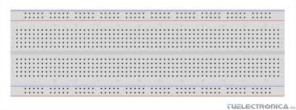
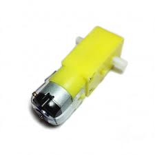
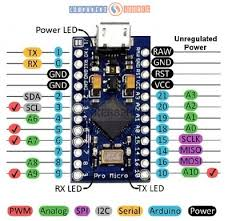
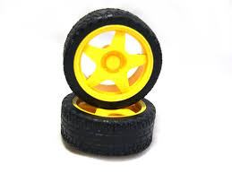
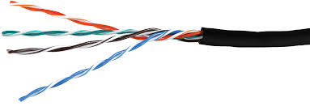
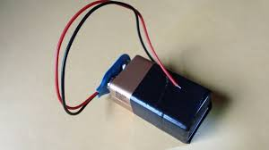
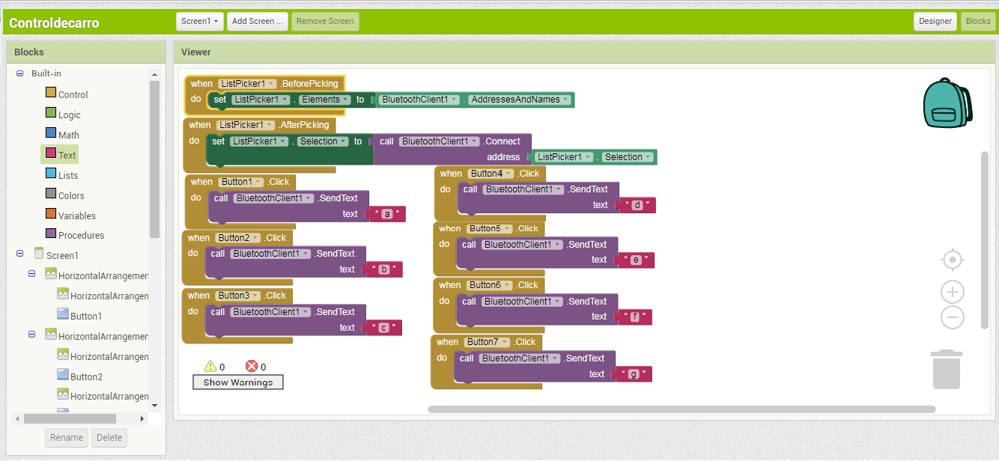
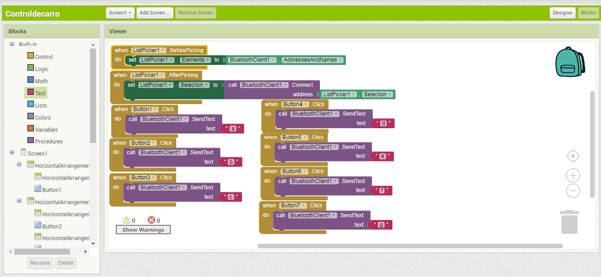

Electricidad para electrónica
Leonardo Castillo Torres (1760821)
2017
Universidad del Valle, sede Zarzal
Algoritmia y programacio
Carro a control Bluetooth
En el siguiente proyecto se demostrara cuales son los procedimientos para crear la a plicacion, la contruccion del carro y los programas que se utilizaron para este propocito
Para poder crear la aplicacion se utilizara una pagina la cual se llamma app inventor
para este proyecto seran necesarios los siguientes componentes:
Una Protoboard

Dos Motorreductores 1,5Kg de fuerza

Un arduino

Dos Llantas para Motorreductores

Un Puente H L293D

Cables de conexion

Una Bateria 9Vdc con su conector

¿Como se creo la app para poder utilizar el carro a control Bluetooth?
para poder crear esta aplicación se utilizara app inventor

En el siguiente punto se podra observar como se creo esta aplicación:
En este punto se colocaron los botones para despues poder programar cada uno con su función para poder manejar
el carro con la señal bluetooth con su logotipo el cual sale en la app

 

Construcion del carro a control remoto
En este punto se utilizaron los diferentes componentes para poder almar el carro a control bluetooth ya armado se creo el programa o codigo para que se pueda utilizar este carro por medio de la programacion en el micro controlador el cual por medio de su programacion pueda manipular cada comando que se le envia por media de la app de coneccion bluetooth